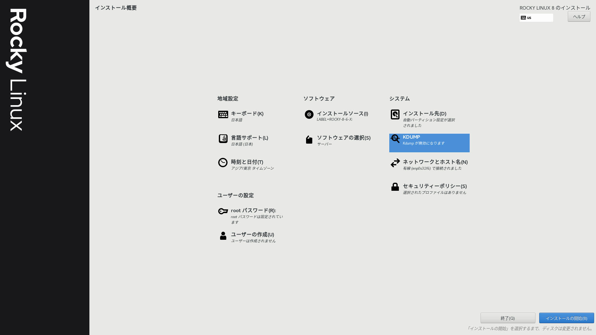
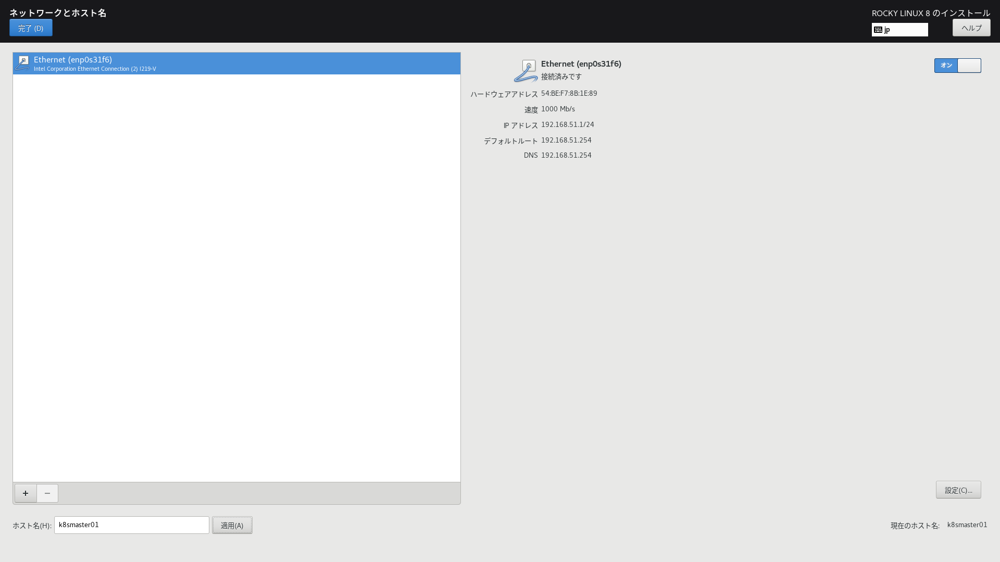

Server #
検討 #
用途 #
- On-Premise Kubernetes Clusterを構築して自宅Labとする
条件 #
Intel CPU #
- コンパイラなどのトラブルを回避したいので
DDR4 SDRAM #
- 転用しやすいので
- 入手しやすいので
省スペース #
- 設置スペースが狭いので
静音 #
- 自宅に設置するので
安価 #
- 予算が少ないので
同一スペックを4台 #
- On-Premise Kubernetes Clusterを構築するので
候補 #
Intel nuc #
- 中古も価格が安定して高価
- 特価も週末を待たずに在庫切れ
Intel mac mini 2020 #
- 中古も価格が安定して高価
ESPRIMO Q556/M #
- 電源内蔵では最小レベル
- 現物中古品を確認した結果、騒音大
EPSON Endeavor ST180E #
- 現物中古品を確認した結果、静音
結果 #
EPSON Endeavor ST180E #
タイミング良く、オークションに程度の良い中古品を発見したので調達
- Intel 第6世代 Core i5-6500T
- DDR4 SDRAM 8GB
- 500GB SATA 2.5inch HDD
- Windows11 Pro デジタル ライセンス付属
- 45×185×195 mm
- 静音
- 4台=55,069円 1台=約13,767円
設定 #
Rocky Linux 8 Install #
Rocky Linux 8のドキュメントに従ってRocky Linux 8をインストールします。  
ほぼデフォルト設定です。
ノードの構成 #
| hostname | IP address | gateway |
|---|---|---|
| k8smaster01 | 192.168.51.1/24 | 192.168.51.254/24 |
| k8sworker01 | 192.168.51.2/24 | 192.168.51.254/24 |
| k8sworker02 | 192.168.51.3/24 | 192.168.51.254/24 |
| k8sworker03 | 192.168.51.4/24 | 192.168.51.254/24 |
ssh server 鍵認証 #
ssh root@192.168.51.1 "mkdir -p ~/.ssh"; scp ~/.ssh/authorized_keys root@192.168.51.1:/root/.ssh/; ssh -i ~/.ssh/k8scluster.pem root@192.168.51.1 "chmod 0600 ~/.ssh/authorized_keys; chmod 0700 ~/.ssh; ls -al ~/.ssh; sed -i.bak -e '/^PasswordAuthentication/s/yes/no/' /etc/ssh/sshd_config; swapoff -a; systemctl stop firewalld; systemctl disable firewalld"
ssh root@192.168.51.2 "mkdir -p ~/.ssh"; scp ~/.ssh/authorized_keys root@192.168.51.2:/root/.ssh/; ssh -i ~/.ssh/k8scluster.pem root@192.168.51.2 "chmod 0600 ~/.ssh/authorized_keys; chmod 0700 ~/.ssh; ls -al ~/.ssh; sed -i.bak -e '/^PasswordAuthentication/s/yes/no/' /etc/ssh/sshd_config; swapoff -a; systemctl stop firewalld; systemctl disable firewalld"
ssh root@192.168.51.3 "mkdir -p ~/.ssh"; scp ~/.ssh/authorized_keys root@192.168.51.3:/root/.ssh/; ssh -i ~/.ssh/k8scluster.pem root@192.168.51.3 "chmod 0600 ~/.ssh/authorized_keys; chmod 0700 ~/.ssh; ls -al ~/.ssh; sed -i.bak -e '/^PasswordAuthentication/s/yes/no/' /etc/ssh/sshd_config; swapoff -a; systemctl stop firewalld; systemctl disable firewalld"
ssh root@192.168.51.4 "mkdir -p ~/.ssh"; scp ~/.ssh/authorized_keys root@192.168.51.4:/root/.ssh/; ssh -i ~/.ssh/k8scluster.pem root@192.168.51.4 "chmod 0600 ~/.ssh/authorized_keys; chmod 0700 ~/.ssh; ls -al ~/.ssh; sed -i.bak -e '/^PasswordAuthentication/s/yes/no/' /etc/ssh/sshd_config; swapoff -a; systemctl stop firewalld; systemctl disable firewalld"